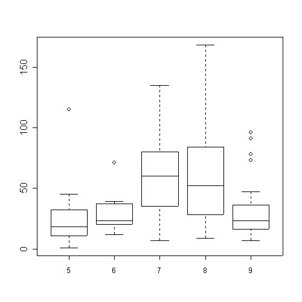

Eric Lecoute
avr. 02, 2004
Adapted from Friedrich Leisch example for LaTeX Sweave
In this example we embed parts of the examples from the kruskal.test from help page into a HTML document:
which showns that the location parameter of the Ozone distribution varies significantly from month to month. Finally, we include a boxplot of the data:
